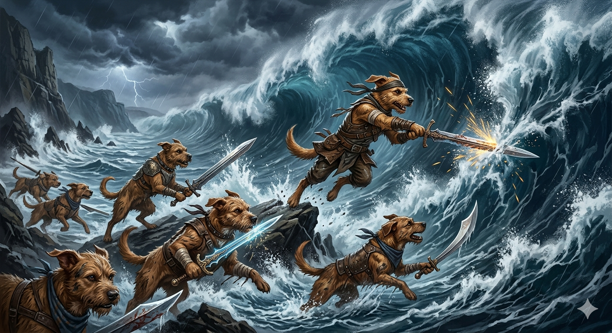

Cachorros caramelos lutam contra maremotos usando espadas

Na madrugada desta sexta-feira, moradores do litoral nordestino afirmaram ter visto dezenas de cachorros caramelos enfrentando um enorme maremoto com espadas brilhantes Segundo testemunhas, os animais correram pela praia organizados, protegendo pescadores e turistas enquanto ondas gigantes avançavam sobre a cidade Especialistas ainda investigam o fenômeno, mas vídeos publicados nas redes sociais mostram os cães latindo em formação, como verdadeiros guerreiros Após horas de combate, o mar recuou misteriosamente, deixando poucos danos materiais A prefeitura anunciou homenagens aos animais e prometeu criar um monumento dedicado aos “heróis caramelos”, que já viraram símbolo nacional de coragem e esperança para muitas famílias